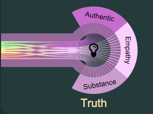

- Reflect The ability to see thing from every perspective.
- Let Wait for and allow insight to flow through.
- TransparentThe complete freedom to reveal and share.
- HumanizeRelate to everyone.
- Shape To beauty of form.
- Medium A transformative substance.

- AuthenticGenuine without pretense.
- Empathy Gentle with feeling
- SubstanceUniversal.
- ConceiveTo begin to take a concept to fruition.
- PerceiveTo see every aspect.
- Receive The ability to internalize others contributions.
- Emotion To engage feel with out senses.
- Transcendto rise about to see from a higher perspective.
- Memory Accurate recall.
- Expand To traverse the entire landscape.
- Nature All the organisms that harmonize with physical forces.
- Flow The self improving transport of nutrient.
- ConstructalThe emergence of order by reducting of friction.
- CoherenceSelf consistent.
- Novelty New things with reinviratirg features.
- WholenessA welcome presence that embraces everything.
- Reach To extend out to others.
- ConnectTo bond you being to others.
- NurtureSafe feeding and care.
- Reveal Open up new possibilies.

- Peaks Ecstasy, harmony, depth, calm with humor
- HumanisticSensitive, intimate, interpersonal, solidary with appreciation
- Realistic Honest, acceptance, reliant, spontaneous and autonomous.